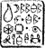

SFAX, TUNUS, KUZEY AFRİKA
ON sekizinci doğum gününde Juliet Kâhya, bir Judo yeleği, iki dengeli, ağır atma bıçağı ve Dünya Pankreas Şampiyonası Rövanş Maçının video kasetini istedi ve aldı; bunlar sıradan bir genç kızın istek listesinde olacak şeyler değillerdi. Zaten Juliet Kâhya da sıradan bir genç kız değildi.
Juliet birçok yönden olağanüstüydü. Bir kere hareket eden bir hedefi, istediğinizi silahla vurabilir, sonra çoğu insanı onlardan beklenenin çok daha uzağına atabilirdi.
Tabii ki bütün bunları pankreas güreşlerini videodan izleyerek öğrenmemişti. Juliet’in eğitimi dört yaşında başladı. Anaokulunda sonra her gün, Domovoi Kâhya küçük kız kardeşini Fowl Malikânesindeki dojoya getirirdi. Burada ona çeşitli dövüş sanatlarını öğretirdi. Sekiz yaşına geldiğinde Juliet siyah kuşak dördüncü dan sekizinci daldaydı. On birinci yaşında kuşaklar üstüydü.
Geleneksel olarak, bütün Kâhya erkekleri onuncu doğum günlerinde Madam Ko’nun Kişisel Koruma Akademisine kaydedilir, her yılın altı ayını orada geçirip korumalık sanatını öğrenirlerdi. Diğer altı ay ise düşük riskli şef koruma öğrenmekle geçerdi. Dişi Kâhyalar genelde dünyanın çeşitli yerlerindeki zengin ailelerine hizmet etmeye giderlerdi. Bununla beraber, Juliet iki rolü birleştireceğine karar vermişti; altı ayı Angeline Fowl’la geçirip diğer altısında Madam Ko’nun kampında dövüş sanatı yeteneklerini geliştiriyordu. Akademiye kaydedilen ilk dişi Kâhya’ydı. O güne kadar fiziki sınavı geçen beşinci dişiydi. Kamp aynı ülkede asla beş yıldan fazla kalmazdı. Kâhya eğitimini İsviçre ve İsrail’de yapmıştı ama kız kardeşi eğitimini Japonya’nın dağlarındaki Utsukushigahara’da almıştı.
Madam Ko’nun koğuşu Fowl Malikânesinin yatacak yerlerinin lüksünden çok çok uzaktı. Japonya’da, Juliet saman bir döşekte uyuyordu, iki kaba pamuk cüppesinden başka bir şeyi yoktu ve sadece pilav, balık yiyip protein shake içiyordu.
Günler saat beş buçukta Juliet ve rahip yardımcılarının en yakın dereye kadar dört mil koşmaları ve elle balık yakalamalarıyla başlıyordu. Balığı pişirip senseilerine sunduktan sonra rahip yardımcıları yirmi litrelik boş fıçıları sırtlarına yüklenip bir karlı sırta tırmanıyorlardı.
Fıçı karla dolduğunda rahip yardımcısı fıçıyı kampın ortasında kadar yuvarlıyor ve sonra eriyene kadar karı çıplak ayaklarıyla ezip senseinin banyo yapabileceği hale getiriyordu. Sonra günlük çalışma başlayabilirdi.
Derslere Madam Ko’nun kendi geliştirdiği bir dövüş sanatı olan Cos Ta’pa da dahildi. Bu özellikle korumalara uygun şekilde düzenlenmişti, ana hedefi kendini koruma yerine şefi korumadı. Rahip yardımcılarına, ileri silah teknolojisi, bilgi teknolojisi, taşıt bakımı ve rehine değiş tokuş görüşmeleri teknikleri de öğreniyorlardı.
On sekizinci doğum gününde Juliet dünya yapımı silahların yüzde doksanını gözleri kapalı söküp takabilir, her tür aracı kullanabilir, dört dakikanın altında makyajını yapabilir ve aşırı çekici Asya-Avrupa gen karışımına rağmen herhangi bir kalabalığa sanki oralıymış gibi karışabilirdi. Abisi ondan çok gurur duyuyordu.
Eğitiminin son aşaması yabancı bir ortamda arazi simülasyonuydu. Eğer bu sınavı geçerse, Madam Ko, Juliet’in omzuna mavi elmas dövmesinin yaptıracaktı. Bu dövme, Kâhya’nın omzunda olanın aynıydı, sadece mezunun sertliğini değil aynı zamanda eğitiminin çok yönlülüğünü de gösterecekti. Kişisel koruma çevresinde, mavi elması olan bir korumanın başka bir referansa ihtiyacı yoktu.
Madam Ko, Juliet’in son değerlendirilmesi için Tunus’un Sfax şehrini seçmişti. Görevi şefini şehrin kargaşalı pazarı ya da eski bölgesinden geçirmekti. Genelde, bir korumanın şefine böyle kalabalık bir bölgeden geçmemesini tavsiye etmesi gerekiyordu ama Madam Ko şeflerin nadiren tavsiyeleri dinlediğini belirtmiş ve her tür neticeye karşı hazır olmanın en iyisi olacağını söylemişti. Ve sanki Juliet yeteri kadar baskı altında değilmiş gibi, sahte şefin yerine Madam Ko’nun kendisi geçmeye karar vermişti.
Kuzey Afrika olağanüstü derecede sıcaktı. Juliet kapalı gözlüğünün içinden gözlerin kısıp kalabalığın içinde önünden sallanarak giden minik figürü takip etmeye odaklanmıştı.
“Çabuk oluyordu," diye bağırdı Madam Ko. “Beni kaybedeceksin.”
“Rüyalarınızda, Madam,” diye karşılık verdi Juliet, hiç rahatsız olmadan. Madam Ko sadece konuşarak onun dikkatini dağıtmaya çalışıyordu. Zaten yerel ortamda yeteri kadar dikkat dağıtıcı şey vardı. Bir düzine tezgahtaki parıldayan iplerden altınlar sarkıyordu; bir tetikçi için mükemmel bir gizlenecek yer olan Tunus halıları tahta askılarda asılıydı. Bu çekici dişiye bakmaya hevesli yerel halk rahatsız edici seviyede ona yaklaşıyordu ve arazi tehlikeliydi; ters bir adımda ayak burkulabilirdi.
Juliet bütün bu verileri otomatikman denetleyip her hareketi faktörlere ayırdı. Ona sırıtan bir gencin göğsüne sertçe elini koyup üzerinde gökkuşağı yansımaları olan yağlı bir birikintinin üstünden atladı ve şehrin eski bölgesindeki sonsuz labirentlerden bir başka ara sokağa giren Madam Ko’yu takip etti.
Birden tam önünde bir-adam belirdi. Pazardaki tüccarlardan biri.
“Güzel halılarım var,” dedi bozuk bir Fransızcayla. “Benimle gel. Sana göstereyim!”
Madam Ko yoluna devam ediyordu. Juliet onu takip etmeye çalıştı ama adam yolunu kesti.
“Hayır, teşekkür ederim. İlgilenmiyorum. Ben doğada yaşarım.”
“Çok komik, mademoiselle. Çok iyi bir şaka yaptınız. Şimdi gelin ve Ahmet’in halılarını görün.”
Kalabalık bunu fark edip sanki dev bir organizmanın kollarıymış gibi onun etrafını çevirmeye başladı. Madam Ko uzaklaşmıştı. Şefini kaybediyordu.
“Hayır dedim. Şimdi çekil, Bay Halıcı. Canımı sıkma.”
Tunuslu bir kadından emir almaya alışık değildi ve arkadaşları onu izliyorlardı.
“Sana iyi bir fiyat vereceğim,” diye ısrar edip tezgahını gösterdi. “Sfax’daki en iyi halılar.”
Juliet yana çekildi ama kalabalık yolunu kesmek için hareket etti.
İşte o anda Ahmet, Juliet’in ona duyabileceği bütün acımayı kaybetti. O ana kadar adam yanlış zamanda, yanlış yerde duran masum biriydi. Ama artık...
“Hadi gidelim,” dedi Tunuslu, kolunu sarışın kızın beline dolayarak. Bu onun en iyi on yöntemine girebilecek bir fikir değildi.
“Ah, kötü bir hareket, Halıcı!”
Göz kırpmaktan bile hızlı bir şekilde, Ahmet en yakındaki halının püsküllerine bağlanmış ve Juliet ortadan kaybolmuştu. Tavukçu Kemal’in video kamerasındaki olayı tekrar izleyene kadar hiç kimsenin neler olduğu hakkında en ufak bir fikri bile yoktu. Yavaş çekimde, tüccarlar Avrasyalı kızın Ahmet’i boğaz ve kemerinden kaldırıp havada kavis çizecek bir şekilde bir halı tezgahına attığını gördüler. Bu kuyumculardan birinin Amerikan pankreasçısı Papa Hog’un meşhur ettiği bir hareket olan Sapanatışı olduğunu fark etti. Bu klip Dünya’nın En Komik Video Çekimleri’nin Tunus versiyonunda bir ödül bile aldı. Üç hafta sonra Ahmet Mısır’a taşındı.
Juliet’e dönelim. Eğitimdeki koruma binalar arasında yüz metre yarışçısı gibi koşuyordu, şaşırmış tüccarlardan kurtuldu ve bir ara sokaktan birden sağa döndü. Madam Ko o kadar uzağa gitmiş olamazdı. Juliet hâlâ görevini tamamlayabilirdi.
Juliet kendisine çok kızmıştı. Bu, tam abisinin onu uyardığı türde bir numaraydı.
“Madam Ko’ya dikkat et,” diye tavsiye etmişti Kâhya. “Arazi görevinde ne uyduracağını asla bilemezsin. Bir keresinde sadece rahip yardımcısının dikkatini dağıtmak için Kalküta’da filleri ürküttüğünü duydum.”
Sorun emin olamayacağınızda O halıcı Madam Ko’nun adamı da olabilirdi, burnunu gerekmeyen bir yere sokmuş zavallı bir adam da.
Sokak o kadar dardı ki insan trafiği bir sıra halinde ilerliyordu. Uydurma elbiseler kafa yüksekliğinde zikzaklar çiziyordu; boşlukta sallanan gutra ve abayalardan sıcak dumanlar yükseliyordu. Juliet bir çamaşırhanenin altından eğilerek geçti ve sallanan dükkâncıların etrafından dolaştı. Şaşkın hindiler iplerin uzunluğu kadar yolundan uzağa sıçradılar.
Ve birden bir açıklığa çıktı. Bu loş meydan üç katlı binalarla çevriliydi. Yukarı balkonlarda insanlar tembel tembel oturuyor, meyve aromalı nargilelerini içiyorlardı. Yerde paha biçilmez bir parçalanmış mozaik vardı; bir Roma hamam sahnesini gösteriyordu.
Meydanın ortasında, dizleri göğsüne yapışmış bir şekilde Madam Ko yatıyordu. Ona saldıran üç adam vardı. Bunlar yerel tüccarlar değildi. Üçü de özel birliklerin siyahlarından giymişlerdi, deneyimli profesyonellerin kesinliği ve kendine güveniyle saldırıyorlardı. Bu bir sınav değildi. Bu adamlar gerçekten de onun senseisini öldürmeye çalışıyorlardı.
Juliet silahsızdı; bu kurallardan biriydi. Bir Afrika ülkesine kaçak silah sokmak otomatikman ömür boyu hapis demekti. Neyse ki rakipleri de silahsızmış gibi görünüyordu ama elleri ve ayakları akıllarına koydukları iş için kesinlikle yeterliydi.
Burada hayatta kalmanın anahtarı doğaçlamaydı. Doğrudan bir saldırıya kalkmanın bir anlamı yoktu. Eğer bu üçü Madam Ko’nun işini halletmişlerse, o zaman sıradan bir savaşta ona fazla geleceklerdi. Zaman alışılmadık bir şey deneme zamanıydı.
Juliet koşarken zıplayıp bir çamaşır ipi yakaladı. İpin bağlı olduğu halka bir saniye için dayandı, sonra kurumuş alçıdan fırladı. İp Juliet’in arkasından geliyor, üzerindeki halı ve eşarplarla bel veriyordu. Juliet ipin diğer halkasının izin verdiği kadar sola gitti ve sonra adamlara doğru döndü.
“Hey, çocuklar!” diye bağırdı, bu kabadayıca bir sesleniş değildi çünkü başlangıçta bu daha çok işe yarayacaktı.
Kafasını tam zamanında kaldıran adamların yüzüne sırılsıklam deve tüyü çarptı. Ağır halılar ve giysiler etraflarını sağa sola sallanan kol ve bacaklar gibi onları sardılar. Naylon ip onları çenelerinin altından yakaladı. Bir saniye bile geçmeden üçü de yerdeydi. Ve Juliet boyunlarındaki sinir düğümlerine bastırarak öyle kalmalarını sağladı.
“Madam Ko!” diye bağırdı, çamaşırhanede senseisini arayarak. Yaşlı kadın zeytin rengi bir elbisenin içinde titriyordu, sade bir eşarp yüzünü örtüyordu.
Juliet ayağa kalkması için kadına yarım etti.
“O hareketi gördünüz mü, Madam? O salakların işini tamamen bitirdim. Daha önce öyle bir şey görmediklerine iddiaya girerim. Doğaçlama. Kâhya her zaman anahtarın bu olduğunu söylerdi. Bilirsiniz, sanırım gözlerime sürdüğüm far onların dikkatini dağıttı. Parıldayan yeşil. Asla başarısız olmaz...”
Juliet konuşmayı kesti çünkü boğazında bir bıçak vardı. Bıçağı tutan aslında Madam Ko olmayan Madam Ko’ydu, zeytin rengi bir elbise giyen başka bir ufak tefek Doğulu bayan. Bir tuzak.
“Öldün,” dedi kadın.
“Evet,” diye ona katıldı Madam Ko, gölgelerin arasından çıkarak. “Sen öldüysen şefin de öldü. Ve kaybettin.” Juliet ellerini birleştirerek başını eğdi.
“Bu çok kurnazca bir üçkâğıttı, Madam,” dedi, saygılı görünmeye çalışarak.
Senseisi güldü. “Tabii ki. Öyle olması gerekiyordu. Ne bekliyordun.”
“Ama şu tetikçiler; kıçlarına tekmeyi sıkı bas... onları iyi bir şekilde yendim.”
Madam Ko bu iddiayı elinin tersini sallayarak boş verdi. “Şans. Şanslıydın, onlar tetikçi değil, Akademiden mezun üç kişi. O plastik ip saçmalığı da neydi?”
“Bir pankreas numarası,” dedi Juliet. “İsmi Çamaşır İpi.”
“Güvenilmez,” dedi Japon Kadın. “Şans yüzünde güldüğü için başarılı oldun. Bizim işimizde şans yeterli değildir.”
“Bu benim hatam değildi,” diye itiraz etti Juliet. “Pazardaki şu adam. Dibimde ayrılmadı. Onu bir süreliğine uyutmam gerekti.”
Madam Ko, Juliet’in gözlerinin arasına parmağıyla vurdu. “Sakin ol, kızım. Bir kerelik düşün. Ne yapman gerekiyordu?”
Juliet başını birkaç santim eğdi. “Tüccarı hemen devre dışı bırakmalıydım.”
“Kesinlikle. Onun hayatının hiçbir anlamı yok. Şefinin güvenliğiyle kıyasla önemsiz.”
.“Masum insanları öylesine öldüremem,” diye itiraz etti Juliet.
Madam Ko iç çekti. “Biliyorum, kızım. Ve bundan dolayı hazır değilsin. Bütün yeteneklerin var ama odaklanma ve karar vermen eksik. Belki önümüzdeki sene.” Juliet’in dünyası karardı. Abisi mavi elması on-sekiz yaşında kazanmıştı. Akademi tarihindeki en genç mezundu. Onunla denk olmayı umuyordu. Artık on iki ay sonra tekrar denemesi gerekiyordu. Daha fazla itiraz etmenin bir anlamı yoktu. Madam Ko asla kararını değiştirmezdi.
Ara sokaktan rahip yardımcısı cüppesi giyen genç bir kız çıktı, elinde küçük bir evrak çantası tutuyordu.
“Madam,” dedi, eğilerek. “Uydu telefonundan sizi arıyorlar.”
Madam Ko ona sunulan telefonu aldı ve dikkatlice birkaç dakika dinledi.”
“Artemis Fowl’dan bir mesaj var,” dedi sonunda. •Juliet doğrulmak için deli oluyordu ama bu protokol için asla bağışlanamayacak bir hareket olurdu.
“Evet, Madam?”
“Mesaj: Domovoi’nin sana ihtiyacı var.”
Juliet kaşlarını çattı. “Yani Kâhya’nın bana ihtiyacı var.”
“Hayır,” dedi Madam Ko, en ufak bir duygu belirtisi göstermeden. “Domovoi’nin sana ihtiyacı var. Ben sadece bana söyleneni sana tekrar ediyorum.”
Birden Juliet boynunu döven güneşi hissedebildi ve kulağında dişçi matkabı gibi vızıldayan sivri sinekleri duyabildi. Tek istediği doğrulup havaalanına kadar koşmaktı. Kâhya’nın asla ismin Artemis’e söylememesi gerekiyordu. Ancak... Ha, buna inanamadı. Bunu düşünmek için kendine izin bile veremedi.
Madam Ko düşüncelice çenesine vuruyordu. “Hazır değilsin. Gitmene izin vermemeliyim. Etkili bir korumanın olmaması gereken seviyede duygusalsın.”
“Lütfen, Madam,” dedi Juliet.
Senseisi bunu iki uzun dakika boyunca düşündü.
“Tamam,” dedi. “Git.”
Kelimenin yankısı meydandan geri gelmeden Juliet gitmişti ve yolunu kesen halıcılara tanrı yardım etsindi.